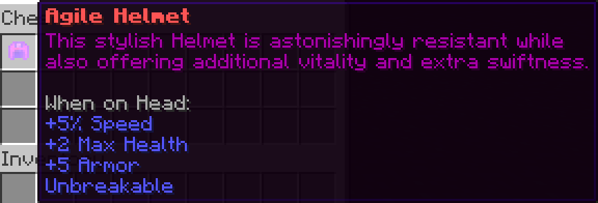

Custom Items
Withered Core
Burning Blade
In einem Witherskelettspawner zu finden.
Die Burning Blade gibt beim Halten Strength I (zusammen mit dem Aspect of the Wolf Strength II).
Demon Dagger
In einem Witherskelettspawner zu finden.
Frozen Blade
In einem Witherskelettspawner zu finden.
Die Frozen Blade gibt allen Spielern im Umkreis von fünf Blöcken Slowness II, wenn man kürzlich einen angegriffen hat.
Mendacious Sword
In einem Witherskelettspawner zu finden.
Sword of Crom
In einem Witherskelettspawner zu finden.
Tiger's Maw
Im Anwesen zu finden.
Act of Violence
Durch das Advancement Terminator zu bekommen.
Blazing Bow
In einem Witherskelettspawner zu finden.
Truly Infinite Bow
Craftbar und im Leuchtturm (Chance: 5%) zu finden.
Rapid Fire Crossbow
Durch das Advancement Feuerwerksmeister zu bekommen.
Fast & Fascinating Fork
Craftbar und im Ozeanmonument und Treibholz (Chance jeweils: 5%) zu finden.
Stormbringer's Retribution
Durch das Advancement Meister der Blitze zu bekommen.
The Black Phalanx
Durch das Advancement Hardcore zu bekommen.
Aspect of the Blaze
In einem Witherskelettspawner zu finden.
Der Aspect of the Blaze gibt Fire Resistance, wenn man ihn anhat.
Aspect of the Golem
In einem Witherskelettspawner zu finden.
Der Aspect of the Golem gibt Resistance I, wenn man ihn anhat.
Aspect of the Guardian
In einem Witherskelettspawner zu finden.
Der Aspect of the Guardian gibt Conduit Power I, wenn man ihn anhat.
Aspect of the Wolf
In einem Witherskelettspawner zu finden.
Der Aspect of the Wolf gibt Strength I (zusammen mit der Burning Blade Strength II), wenn man ihn anhat.
Infrangible Elytra
Craftbar und auf der Himmelsinsel und dem Luftschiff (Chance jeweils: 5%) zu finden.
Wings of the Phoenix
Auf einer Himmelsinsel zu finden.
Die Wings of the Phoenix hinterlassen Feuerpartikel beim Fliegen.
Agile Armor
Auf zwei Himmelsinseln zu finden.

Godbreaker Armor
Bei einem der beiden Villager pro Rüstungsteil für einen Withered Core zu traden.
Bringer of Fortune
Durch das Advancement Glücklicher Zufall zu bekommen.

Maniac Miner
In einem Witherskelettspawner zu finden.
Woodchuck
In einem Witherskelettspawner zu finden.
Gentle Tools
Schmiedbar und im Anwesen (Chance: 5%) zu finden.
Health Tonic
Craftbar und im Anwesen und der Hexenhütte (Chance jeweils: 5%) zu finden.
Stoneskin Tonic
Craftbar und im Anwesen und der Hexenhütte (Chance jeweils: 5%) zu finden.
Tonic of the Water
Craftbar und im Anwesen und der Hexenhütte (Chance jeweils: 5%) zu finden.
Tonic of true Strength
Craftbar und im Anwesen und der Hexenhütte (Chance jeweils: 5%) zu finden.
Lava-Proof Stew
Craftbar und in der Hexenhütte (Chance: 5%) zu finden.
Lucky Stew
Craftbar und in der Hexenhütte (Chance: 5%) zu finden.
Stew of Regeneration
Craftbar und in der Hexenhütte (Chance: 5%) zu finden.